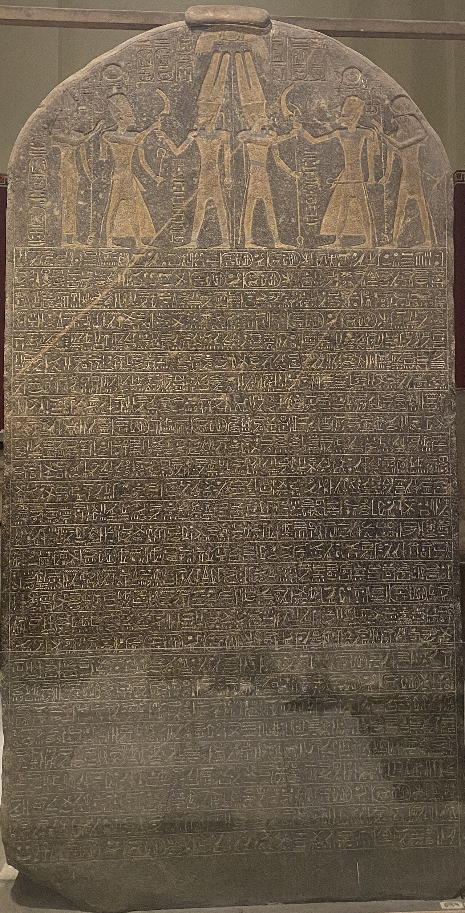

Merneptah Stele

- Find Name
- Merneptah Stele
- Historical Period
- Bronze Age
- Artifact Date
- c. 1208 BC
- Date Discovered
- 1896
- Discovery Location
- Thebes, Egypt
- Current Location
- Egyptian Museum, Cairo
- Timeline Era
- Conquest and Judges
- Description
- A large granite victory stele of Pharaoh Merneptah listing peoples and cities defeated in Canaan, including Ashkelon, Gezer, and Yanoam. In its closing lines it names 'Israel' with a hieroglyph used for a people rather than a city-state.
- Biblical Significance
- This is the earliest extra-biblical mention of Israel by name, showing a people called Israel already present in Canaan by about 1208 BC. It does not prove every detail of the Exodus or Conquest, but it happily confirms the Bible's basic claim that Israel existed in the land in this period.
- Evidence Class
- Direct
- Interpretations
- Scholars agree this c. 1208 BC inscription is the earliest extra-biblical mention of Israel, though its claim that ‘Israel is laid waste’ is royal boasting — Israel plainly survived, as the later record shows.
- Scripture Illuminated
- Related People
- Related Books
- Related Places
- Related Events